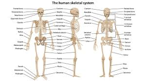
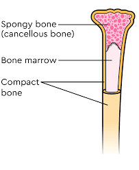
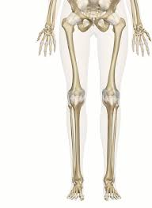
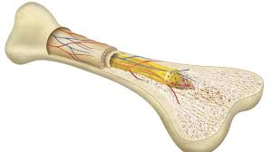
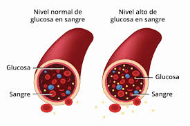
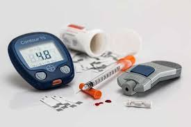
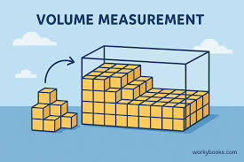
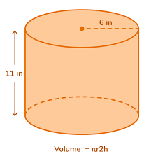

We made a presentation where we joined our research,
discoveries, and work from every project.
Things like Diabetes, the Skeletal System, Volume,
Proportions, HTML Coding, and 3D Modeling.
We programmed a web page that talks about every topic
we researched about.
This study analyzes diabetes data to evaluate how body volume predicts obesity and its progression to type 2 diabetes. By using 3D volumetrics, we bypassed the limitations of standard Body Mass Index (BMI) to accurately measure visceral fat, which is directly linked to insulin resistance.
The research focuses on three main pillars:
Volumetric Indicators: Regional volume calculations help identify central obesity, serving as a precise predictor for diabetes risk.
Anatomical Proportions: Analyzing body ratios maps android fat distribution, which correlates directly with metabolic syndrome.
Bone Mass Percentage: Calculating the exact percentage of bone mass isolates skeletal weight. This reveals normal-weight obesity, identifying individuals with high fat percentages but healthy BMIs who still face severe diabetes risks.
Bones are living, growing organs that make up the skeletal system.


Bones are living organs made primarily of a tough, flexible protein called collagen and a hard mineral called calcium phosphate.
Their primary functions include providing physical support, protecting vital organs, and facilitating movement.

The skeleton provides a strong framework to support and protect soft organs such as the brain, heart, and lungs.

Collagen provides flexibility and resilience, helping bones absorb impact and prevent shattering.
Diabetes Mellitus (DM) is a chronic condition where the body cannot properly regulate blood glucose levels.

Frequent urination, increased thirst and hunger, and losing weight without trying.
Diabetes risk factors include age, family health history, and lifestyle.

Getting treated keeps blood sugar at safe levels and prevents long-term damage to organs and nerves.
Maintaining a healthy lifestyle helps control blood sugar levels and prevents serious health complications.
Volume refers to the amount of three-dimensional space occupied by an object.

For a rectangular box:
V = l × w × h

Knowing the formula helps calculate capacity, manage spaces, and measure materials accurately.
Different geometric shapes enclose space differently, requiring unique mathematical formulas.
We used the process of volume to discover if a team member has a risk of diabetes.
We made a 3D model to see a visual of our measurements.
We used proportions to make a simple drawing of our measurements.
We made a table that compares the guess of the height of our bones proportionally to our body using percentages.